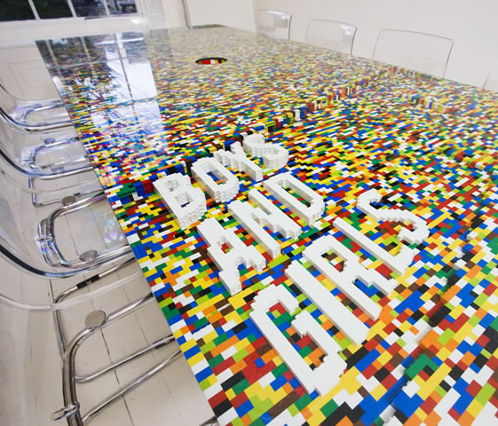
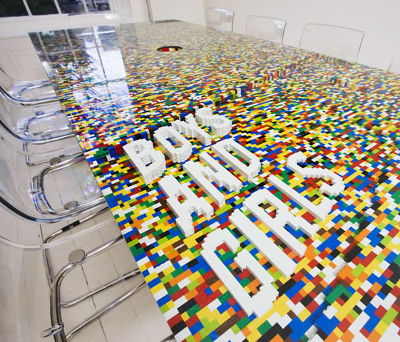

Boys and Girls Boardroom Table
Dublin based architects abgc created a “playful yet not juvenile" boardroom table constructed with 22,742 Lego bricks for the advertising agency Boys and Girls.
Via We Heart

Dublin based architects abgc created a “playful yet not juvenile" boardroom table constructed with 22,742 Lego bricks for the advertising agency Boys and Girls.
Via We Heart